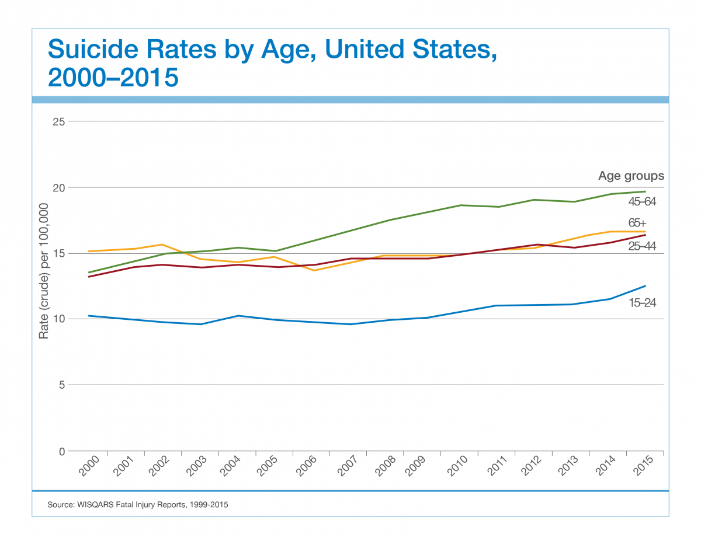

suicide: the act or an instance of taking one's own life voluntarily and intentionally
The suicide rate in the US increased 24% from 1999 to 2014, for both males and females ages 10-74, rising from 10.5 to 13.0 per 100,000 population.
Suicide is the 10th leading cause of death in the US. It is the second leading cause of death worldwide aged 15-24.
One person commits suicide in the US every 12 minutes.

Suicide is the third leading cause of death for 15 to 24 year olds in America.
It is the fourth leading cause of death for adults for adults age 18-65.
Male suicide rates are the highest among those over 75, while female suicide rates peak at age 45-54.
The most frequent suicide method for males was use of firearms (55.4%) while for women, the most frequent method was females (34.1%).
Women are twice as likely to experience depression than men.
The suicide rate for males is more than triple that for females, while females attempt suicide three times as often as males.
Many suicides are fueled by impulsivity, incited by recent crises. 24% of those who attempt suicide made the decision less than 5 minutes before the attempt; 70% made the decision within an hour before.